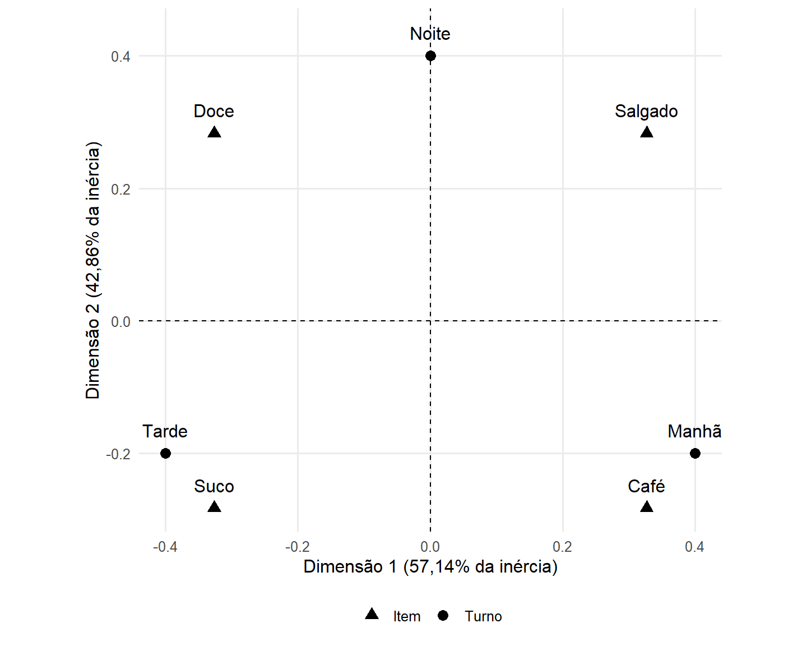

17 Formulação da Análise de Correspondência
A Análise de Correspondência simples representa geometricamente a estrutura de associação entre as categorias de duas variáveis categóricas a partir de uma tabela de contingência. A técnica compara os perfis observados com a estrutura correspondente à independência segundo a geometria qui-quadrado (Johnson; Wichern, 2002).
Os desvios da independência são padronizados pelas massas e reunidos em uma matriz submetida à SVD. A decomposição determina as dimensões não nulas, as inércias principais e as coordenadas das categorias de linhas e colunas. A formulação é geométrica e descritiva. A relação com a estatística de Pearson exige distinguir a identidade algébrica válida para a tabela observada da inferência sobre independência em uma população.
Os elementos da formulação são organizados na Tabela 17.1.
| Elemento | Objeto | Papel na análise |
|---|---|---|
| dados observados | tabela de contingência \(\mathbf N\) | registra as frequências conjuntas |
| distribuição observada | matriz \(\mathbf P\) | expressa frequências relativas |
| referência | independência | fornece a estrutura sem associação |
| representação interna | perfis de linhas e de colunas | descreve distribuições condicionais observadas |
| ponderação | massas de linha e de coluna | determinam os pesos utilizados na geometria dos perfis |
| geometria | distância qui-quadrado | compara perfis com ponderação pelos inversos das massas da margem oposta |
| estrutura matricial | matriz de desvios padronizados da independência \(\mathbf Q_{\mathrm{CA}}\) | reúne os desvios da independência após a padronização pelas massas |
| solução | SVD de \(\mathbf Q_{\mathrm{CA}}\) | determina valores singulares, inércias principais e coordenadas |
17.1 O problema de associação em uma tabela de contingência
A Análise de Correspondência simples considera duas variáveis categóricas. Para \(n\) observações, os dados categóricos podem ser organizados como
\[ \mathbf X_{\mathrm{cat}} = \begin{pmatrix} x_{11} & x_{12}\\ x_{21} & x_{22}\\ \vdots & \vdots\\ x_{n1} & x_{n2} \end{pmatrix}, \]
em que cada linha representa uma observação e cada coluna representa uma das duas variáveis categóricas.
A primeira variável possui \(I\) categorias e a segunda possui \(J\) categorias. Os índices \(1,\ldots,I\) e \(1,\ldots,J\) identificam essas categorias, de modo que
\[ x_{h1}\in\{1,\ldots,I\}, \qquad x_{h2}\in\{1,\ldots,J\}, \qquad h=1,\ldots,n. \]
A matriz \(\mathbf X_{\mathrm{cat}}\) contém duas variáveis. As quantidades \(I\) e \(J\) indicam os números de categorias da primeira e da segunda variável, respectivamente. Os índices atribuídos às categorias funcionam apenas como identificadores e não definem coordenadas quantitativas em \(\mathbb R^2\).
A Análise de Correspondência utiliza as frequências conjuntas das categorias. Para \(i=1,\ldots,I\) e \(j=1,\ldots,J\), defina
\[ n_{ij} = \left| \left\{ h\in\{1,\ldots,n\}: x_{h1}=i,\; x_{h2}=j \right\} \right|. \]
A quantidade \(n_{ij}\) corresponde ao número de observações que pertencem simultaneamente à categoria \(i\) da primeira variável e à categoria \(j\) da segunda. Essas frequências formam a tabela de contingência
\[ \mathbf N = (n_{ij}) \in \mathbb N_0^{I\times J}. \]
A matriz \(\mathbf N\) possui \(I\) linhas, correspondentes às categorias da primeira variável, e \(J\) colunas, correspondentes às categorias da segunda. Suas dimensões \(I\times J\) referem-se às categorias das duas variáveis categóricas.
O total observado é
\[ n = \sum_{i=1}^{I} \sum_{j=1}^{J} n_{ij}, \qquad n>0. \tag{17.1}\]
Como \(n>0\), a matriz de frequências relativas observadas é definida por
\[ \mathbf P = \frac{1}{n}\mathbf N = (p_{ij}) \in \mathbb R^{I\times J}. \tag{17.2}\]
Assim,
\[ p_{ij} = \frac{n_{ij}}{n} \geq 0 \]
e
\[ \sum_{i=1}^{I} \sum_{j=1}^{J} p_{ij} = 1. \]
A matriz \(\mathbf P\) reúne as frequências relativas observadas da tabela e é construída diretamente a partir das frequências observadas. Ela deve ser distinguida da distribuição conjunta populacional considerada na Seção 17.13.6.
A análise procura determinar como \(\mathbf P\) se afasta da estrutura correspondente à independência e representar esse afastamento em poucas dimensões.
A tabela possui duas leituras complementares. Comparando as linhas, investigam-se diferenças entre as distribuições das categorias das colunas condicionadas a cada linha. Comparando as colunas, investigam-se diferenças entre as distribuições das categorias das linhas condicionadas a cada coluna.
17.2 Massas e perfis
As frequências relativas marginais são denominadas massas e determinam a ponderação utilizada na geometria da Análise de Correspondência.
Definição 17.1 (Massas de linha e de coluna) Considere uma matriz de frequências relativas
\[ \mathbf P = (p_{ij}) \in \mathbb R^{I\times J}, \]
com
\[ p_{ij}\geq0 \]
e
\[ \sum_{i=1}^{I} \sum_{j=1}^{J} p_{ij} = 1. \]
As massas das linhas são
\[ r_i = \sum_{j=1}^{J} p_{ij}, \qquad i=1,\ldots,I, \]
e as massas das colunas são
\[ c_j = \sum_{i=1}^{I} p_{ij}, \qquad j=1,\ldots,J. \]
Em forma vetorial,
\[ \mathbf r = \mathbf P\mathbf1_J \in \mathbb R^I \]
e
\[ \mathbf c = \mathbf P^\top\mathbf1_I \in \mathbb R^J. \]
Como a soma dos elementos de \(\mathbf P\) é igual a \(1\),
\[ \mathbf1_I^\top\mathbf r = \mathbf1_J^\top\mathbf c = 1. \]
As matrizes diagonais das massas são
\[ \mathbf D_r = \operatorname{diag} (r_1,\ldots,r_I) \in \mathbb R^{I\times I} \]
e
\[ \mathbf D_c = \operatorname{diag} (c_1,\ldots,c_J) \in \mathbb R^{J\times J}. \]
A definição admite massas nulas. Como a geometria da Análise de Correspondência utiliza inversas e raízes inversas das matrizes de massas, o desenvolvimento considera apenas categorias com
\[ r_i>0, \qquad i=1,\ldots,I, \]
e
\[ c_j>0, \qquad j=1,\ldots,J. \tag{17.3}\]
Categorias de massa nula não possuem perfis definidos e ficam fora da geometria construída sob a condição da Equação 17.3.
17.2.1 Distribuições condicionais observadas
A Análise de Correspondência compara distribuições condicionais observadas, denominadas perfis.
Definição 17.2 (Perfis de linhas e de colunas) Considere
\[ \mathbf P = (p_{ij}) \in \mathbb R^{I\times J} \]
uma matriz de frequências relativas com massas de linhas e colunas definidas na Definição 17.1.
Para uma linha \(i\) com
\[ r_i>0, \]
o perfil da linha \(i\) é
\[ \mathbf p_{i\mid\cdot} = \begin{pmatrix} \dfrac{p_{i1}}{r_i}\\ \vdots\\ \dfrac{p_{iJ}}{r_i} \end{pmatrix} \in \mathbb R^J. \tag{17.4}\]
Para uma coluna \(j\) com
\[ c_j>0, \]
o perfil da coluna \(j\) é
\[ \mathbf p_{\cdot\mid j} = \begin{pmatrix} \dfrac{p_{1j}}{c_j}\\ \vdots\\ \dfrac{p_{Ij}}{c_j} \end{pmatrix} \in \mathbb R^I. \tag{17.5}\]
Cada perfil possui soma unitária:
\[ \mathbf1_J^\top \mathbf p_{i\mid\cdot} = 1 \]
e
\[ \mathbf1_I^\top \mathbf p_{\cdot\mid j} = 1. \]
Sob a condição da Equação 17.3, os perfis de linhas podem ser reunidos na matriz
\[ \mathbf P^{(r)} = \mathbf D_r^{-1} \mathbf P \in \mathbb R^{I\times J}, \tag{17.6}\]
enquanto os perfis de colunas são organizados em
\[ \mathbf P^{(c)} = \mathbf D_c^{-1} \mathbf P^\top \in \mathbb R^{J\times I}. \tag{17.7}\]
O perfil médio das linhas, ponderado pelas massas \(r_i\), é
\[ \sum_{i=1}^{I} r_i \mathbf p_{i\mid\cdot} = \mathbf c, \tag{17.8}\]
pois, para cada componente \(j\),
\[ \sum_{i=1}^{I} r_i \frac{p_{ij}}{r_i} = \sum_{i=1}^{I} p_{ij} = c_j. \]
De forma dual,
\[ \sum_{j=1}^{J} c_j \mathbf p_{\cdot\mid j} = \mathbf r. \tag{17.9}\]
Assim, \(\mathbf c\) é o centro ponderado da nuvem dos perfis de linhas e \(\mathbf r\) é o centro ponderado da nuvem dos perfis de colunas.
17.2.2 Independência como referência
Para a matriz \(\mathbf P\), a estrutura de independência associada às massas \(\mathbf r\) e \(\mathbf c\) é
\[ p_{ij} = r_ic_j, \tag{17.10}\]
ou, em forma matricial,
\[ \mathbf P = \mathbf r\mathbf c^\top. \tag{17.11}\]
Sob a condição da Equação 17.3,
\[ \frac{p_{ij}}{r_i} = c_j, \]
de modo que
\[ \mathbf p_{i\mid\cdot} = \mathbf c \]
para todas as linhas.
Analogamente,
\[ \frac{p_{ij}}{c_j} = r_i, \]
e todos os perfis de colunas coincidem com
\[ \mathbf r. \]
A independência corresponde, portanto, ao colapso de cada nuvem de perfis em seu respectivo centro.
Quando
\[ \mathbf P \neq \mathbf r\mathbf c^\top, \]
as diferenças
\[ p_{ij}-r_ic_j \]
representam os desvios observados em relação à estrutura de independência.
Esses desvios ainda não incorporam a ponderação marginal da geometria qui-quadrado. Na Análise de Correspondência, eles são padronizados pelos produtos das massas marginais.
17.3 Geometria dos perfis
A Análise de Correspondência compara os perfis por meio de produtos internos ponderados pelos inversos das massas da margem oposta.
Pela Definição 3.16 e pela Definição 3.17, sob a condição da Equação 17.3,
\[ \mathbf D_c^{-1} \]
e
\[ \mathbf D_r^{-1} \]
são matrizes diagonais positivas definidas e, portanto, definem produtos internos nos espaços de perfis de linhas e de colunas.
Esses produtos internos determinam a geometria dos perfis. As distâncias associadas são as distâncias qui-quadrado.
Definição 17.3 (Distância qui-quadrado entre perfis) Considere uma matriz
\[ \mathbf P \in \mathbb R^{I\times J} \]
de frequências relativas cujas massas satisfazem
\[ r_i>0, \qquad i=1,\ldots,I, \]
e
\[ c_j>0, \qquad j=1,\ldots,J. \]
Se
\[ \mathbf p_{i\mid\cdot}, \mathbf p_{i'\mid\cdot} \in \mathbb R^J \]
são dois perfis de linhas, o quadrado de sua distância qui-quadrado é definido por
\[ d_{\chi^2}^2(i,i') = \left( \mathbf p_{i\mid\cdot} - \mathbf p_{i'\mid\cdot} \right)^\top \mathbf D_c^{-1} \left( \mathbf p_{i\mid\cdot} - \mathbf p_{i'\mid\cdot} \right). \tag{17.12}\]
Equivalentemente,
\[ d_{\chi^2}^2(i,i') = \sum_{j=1}^{J} \frac{1}{c_j} \left( \frac{p_{ij}}{r_i} - \frac{p_{i'j}}{r_{i'}} \right)^2. \]
Se
\[ \mathbf p_{\cdot\mid j}, \mathbf p_{\cdot\mid j'} \in \mathbb R^I \]
são dois perfis de colunas, o quadrado de sua distância qui-quadrado é
\[ d_{\chi^2}^2(j,j') = \left( \mathbf p_{\cdot\mid j} - \mathbf p_{\cdot\mid j'} \right)^\top \mathbf D_r^{-1} \left( \mathbf p_{\cdot\mid j} - \mathbf p_{\cdot\mid j'} \right). \tag{17.13}\]
Equivalentemente,
\[ d_{\chi^2}^2(j,j') = \sum_{i=1}^{I} \frac{1}{r_i} \left( \frac{p_{ij}}{c_j} - \frac{p_{ij'}}{c_{j'}} \right)^2. \]
A distância qui-quadrado é, portanto, uma distância euclidiana em coordenadas reescaladas pelas massas. Para as linhas,
\[ d_{\chi^2}(i,i') = \left\| \mathbf D_c^{-1/2} \left( \mathbf p_{i\mid\cdot} - \mathbf p_{i'\mid\cdot} \right) \right\|, \]
e, para as colunas,
\[ d_{\chi^2}(j,j') = \left\| \mathbf D_r^{-1/2} \left( \mathbf p_{\cdot\mid j} - \mathbf p_{\cdot\mid j'} \right) \right\|. \]
Na comparação entre perfis de linhas, a diferença na categoria de coluna \(j\) é ponderada por
\[ \frac{1}{c_j}. \]
Na comparação entre perfis de colunas, a diferença na categoria de linha \(i\) é ponderada por
\[ \frac{1}{r_i}. \]
Assim, para diferenças absolutas de mesma magnitude, a componente associada a uma categoria de menor massa tem maior peso na distância qui-quadrado.
A distância de uma linha ao centro da nuvem é
\[ d_{\chi^2}^2(i,\mathbf c) = \left( \mathbf p_{i\mid\cdot} - \mathbf c \right)^\top \mathbf D_c^{-1} \left( \mathbf p_{i\mid\cdot} - \mathbf c \right), \tag{17.14}\]
ou, utilizando
\[ \frac{p_{ij}}{r_i} - c_j = \frac{ p_{ij}-r_ic_j }{ r_i }, \]
tem-se
\[ d_{\chi^2}^2(i,\mathbf c) = \sum_{j=1}^{J} \frac{ (p_{ij}-r_ic_j)^2 }{ r_i^2c_j }. \tag{17.15}\]
De forma dual,
\[ d_{\chi^2}^2(j,\mathbf r) = \sum_{i=1}^{I} \frac{ (p_{ij}-r_ic_j)^2 }{ c_j^2r_i }. \tag{17.16}\]
17.4 Inércia e afastamento da independência
Definição 17.4 (Inércia total) A inércia total mede o afastamento global dos perfis em relação à estrutura de independência por meio das distâncias qui-quadrado entre os perfis e o centro da nuvem.
Para a nuvem de perfis de linhas, com massas \(r_1,\ldots,r_I\) e centro \(\mathbf c\), a inércia total é
\[ \mathcal I = \sum_{i=1}^{I} r_i d_{\chi^2}^2 \left( i,\mathbf c \right). \tag{17.17}\]
Como
\[ \sum_{i=1}^{I}r_i=1, \]
\(\mathcal I\) é a média ponderada das distâncias qui-quadrado ao quadrado entre os perfis de linhas e o centro da nuvem. O termo
\[ r_i d_{\chi^2}^2 \left( i,\mathbf c \right) \]
é a parcela da inércia total associada à categoria de linha \(i\).
Substituindo a distância qui-quadrado da Equação 17.15 na Equação 17.17,
\[ \mathcal I = \sum_{i=1}^{I} \sum_{j=1}^{J} \frac{ (p_{ij}-r_ic_j)^2 }{ r_ic_j }. \tag{17.18}\]
De forma dual,
\[ \mathcal I = \sum_{j=1}^{J} c_j d_{\chi^2}^2 \left( j,\mathbf r \right), \tag{17.19}\]
de modo que a mesma inércia total pode ser obtida pela dispersão da nuvem de linhas em torno de \(\mathbf c\) ou pela dispersão da nuvem de colunas em torno de \(\mathbf r\).
Como todos os termos na Equação 17.18 são não negativos,
\[ \mathcal I=0 \]
se, e somente se,
\[ p_{ij}=r_ic_j \]
para todas as células, ou equivalentemente,
\[ \mathbf P = \mathbf r\mathbf c^\top. \]
A inércia total é nula quando a distribuição observada coincide com a estrutura de independência. Valores positivos indicam afastamento dessa estrutura, e valores maiores correspondem a maior dispersão global dos perfis em relação aos respectivos centros.
17.5 Padronização dos desvios da independência
Na Equação 17.18, os desvios
\[ p_{ij}-r_ic_j \]
aparecem padronizados pelas massas correspondentes. Esses termos podem ser reunidos em uma única matriz.
Definição 17.5 (Matriz de desvios padronizados da independência) Considere
\[ \mathbf P = (p_{ij}) \in \mathbb R^{I\times J} \]
uma matriz de frequências relativas cujas massas
\[ r_i>0, \qquad i=1,\ldots,I, \]
e
\[ c_j>0, \qquad j=1,\ldots,J, \]
são estritamente positivas.
A matriz de desvios padronizados da independência é
\[ \mathbf Q_{\mathrm{CA}} = \mathbf D_r^{-1/2} \left( \mathbf P - \mathbf r\mathbf c^\top \right) \mathbf D_c^{-1/2} \in \mathbb R^{I\times J}. \tag{17.20}\]
Seu elemento \((i,j)\) é
\[ q_{ij} = \frac{ p_{ij}-r_ic_j }{ \sqrt{r_ic_j} }. \tag{17.21}\]
A matriz \(\mathbf Q_{\mathrm{CA}}\) reúne os desvios da independência padronizados pelos produtos das massas marginais.
As restrições impostas pelas marginais implicam que o posto de \(\mathbf Q_{\mathrm{CA}}\), definido na Definição 2.12, satisfaz
\[ \operatorname{posto} \left( \mathbf Q_{\mathrm{CA}} \right) \leq \min \left( I-1, J-1 \right). \tag{17.22}\]
As dependências lineares impostas pelas marginais, cuja derivação é apresentada na Seção 17.13.1, implicam que a Análise de Correspondência possui, no máximo,
\[ \min \left( I-1, J-1 \right) \]
dimensões não nulas.
17.5.1 Inércia como norma matricial
Pela Definição 17.5 e pela Definição 6.7,
\[ \begin{aligned} \left\| \mathbf Q_{\mathrm{CA}} \right\|_F^2 &= \sum_{i=1}^{I} \sum_{j=1}^{J} q_{ij}^2 \\ &= \sum_{i=1}^{I} \sum_{j=1}^{J} \frac{ (p_{ij}-r_ic_j)^2 }{ r_ic_j }. \end{aligned} \]
Comparando essa expressão com a Equação 17.18,
\[ \mathcal I = \left\| \mathbf Q_{\mathrm{CA}} \right\|_F^2. \tag{17.23}\]
Proposição 17.1 (Formas equivalentes da inércia) Sob massas de linhas e colunas estritamente positivas,
\[ \mathcal I = \sum_{i=1}^{I} r_i d_{\chi^2}^2(i,\mathbf c) = \sum_{j=1}^{J} c_j d_{\chi^2}^2(j,\mathbf r) \]
e
\[ \mathcal I = \sum_{i=1}^{I} \sum_{j=1}^{J} \frac{ (p_{ij}-r_ic_j)^2 }{ r_ic_j } = \left\| \mathbf Q_{\mathrm{CA}} \right\|_F^2. \]
A inércia possui três interpretações compatíveis: dispersão da nuvem de linhas, dispersão da nuvem de colunas e magnitude matricial dos desvios padronizados da independência.
17.6 Relação algébrica com a estatística de Pearson
Sob a estrutura de independência ajustada às marginais observadas, a frequência esperada da célula \((i,j)\) é
\[ \widehat e_{ij} = nr_ic_j. \]
A estatística de Pearson calculada a partir da tabela observada é
\[ \chi^2 = \sum_{i=1}^{I} \sum_{j=1}^{J} \frac{ (n_{ij}-\widehat e_{ij})^2 }{ \widehat e_{ij} } = \sum_{i=1}^{I} \sum_{j=1}^{J} \frac{ (n_{ij}-nr_ic_j)^2 }{ nr_ic_j }. \tag{17.24}\]
Como
\[ n_{ij} = np_{ij}, \]
tem-se
\[ \begin{aligned} \chi^2 &= \sum_{i=1}^{I} \sum_{j=1}^{J} \frac{ n^2 (p_{ij}-r_ic_j)^2 }{ nr_ic_j } \\ &= n \sum_{i=1}^{I} \sum_{j=1}^{J} \frac{ (p_{ij}-r_ic_j)^2 }{ r_ic_j }. \end{aligned} \]
Comparando a expressão anterior com a Equação 17.18,
\[ \chi^2 = n\mathcal I. \tag{17.25}\]
A identidade
\[ \chi^2=n\mathcal I \]
é algébrica e exata para a tabela observada. Ela não exige um modelo probabilístico para a geração da tabela nem uma aproximação assintótica.
Sua interpretação como estatística de teste exige um modelo probabilístico para a geração da tabela, desenvolvido na Seção 17.13.6. A inércia e a identidade acima pertencem à estrutura descritiva e geométrica da Análise de Correspondência, enquanto a distribuição de referência de \(\chi^2\) pertence à inferência.
A estatística de Pearson resume o afastamento global da independência em uma única quantidade. A Análise de Correspondência decompõe a inércia correspondente entre dimensões e representa geometricamente os perfis de linhas e colunas (Johnson; Wichern, 2002).
17.7 Formulação pela decomposição em valores singulares
A matriz de desvios padronizados
\[ \mathbf Q_{\mathrm{CA}} \in \mathbb R^{I\times J} \]
é, em geral, retangular. A decomposição de \(\mathbf Q_{\mathrm{CA}}\) utiliza a SVD compacta definida na Definição 6.4.
Defina
\[ L = \operatorname{posto} \left( \mathbf Q_{\mathrm{CA}} \right). \]
Pela Equação 17.22,
\[ 0 \leq L \leq \min \left( I-1, J-1 \right). \]
Se
\[ L=0, \]
então
\[ \mathbf Q_{\mathrm{CA}} = \mathbf0 \]
e, pela Proposição 17.1,
\[ \mathcal I=0. \]
Nesse caso,
\[ \mathbf P = \mathbf r\mathbf c^\top, \]
e não existem dimensões não nulas a decompor.
Quando \(L\geq1\), pela SVD compacta definida na Definição 6.4,
\[ \mathbf Q_{\mathrm{CA}} = \mathbf U \mathbf D \mathbf V^\top, \tag{17.26}\]
com
\[ \mathbf U \in \mathbb R^{I\times L}, \qquad \mathbf D \in \mathbb R^{L\times L}, \qquad \mathbf V \in \mathbb R^{J\times L}, \]
satisfazendo
\[ \mathbf U^\top \mathbf U = \mathbf I_L, \]
\[ \mathbf V^\top \mathbf V = \mathbf I_L \]
e
\[ \mathbf D = \operatorname{diag} \left( d_1,\ldots,d_L \right), \]
em que
\[ d_1 \geq d_2 \geq \cdots \geq d_L > 0. \]
Os vetores singulares à esquerda e à direita formam as bases ortonormais associadas à SVD. O reescalonamento por \(\mathbf D_r^{-1/2}\) e \(\mathbf D_c^{-1/2}\) produz as coordenadas padrão das linhas e das colunas em suas respectivas geometrias ponderadas.
A SVD acopla as duas representações por meio dos mesmos valores singulares.
17.7.1 Decomposição da inércia
Definição 17.6 (Inércia principal) A SVD de \(\mathbf Q_{\mathrm{CA}}\) decompõe a inércia total entre as dimensões não nulas da solução.
Para
\[ \mathbf Q_{\mathrm{CA}} = \mathbf U \mathbf D \mathbf V^\top, \]
com
\[ \mathbf D = \operatorname{diag} \left( d_1,\ldots,d_L \right), \]
a inércia principal da dimensão \(\ell\) é
\[ \lambda_\ell = d_\ell^2, \qquad \ell=1,\ldots,L. \tag{17.27}\]
A quantidade \(\lambda_\ell\) representa a parcela da inércia total associada à dimensão \(\ell\).
Pela relação entre a norma de Frobenius e os valores singulares estabelecida na Proposição 6.9,
\[ \left\| \mathbf Q_{\mathrm{CA}} \right\|_F^2 = \sum_{\ell=1}^{L} d_\ell^2. \]
Pela Equação 17.23,
\[ \mathcal I = \left\| \mathbf Q_{\mathrm{CA}} \right\|_F^2, \]
e, portanto,
\[ \mathcal I = \sum_{\ell=1}^{L} \lambda_\ell. \tag{17.28}\]
A SVD decompõe a inércia total em parcelas não negativas associadas às diferentes dimensões da solução.
Pela identidade exata da Equação 17.25,
\[ \chi^2 = n\mathcal I, \]
\[ \chi^2 = n \sum_{\ell=1}^{L} \lambda_\ell. \tag{17.29}\]
A igualdade \(\chi^2=n\sum_{\ell=1}^{L}\lambda_\ell\) é uma decomposição algébrica da estatística observada e não depende de uma distribuição amostral. Sua interpretação inferencial depende da formulação probabilística especificada na Seção 17.13.6.
Quando \(\mathcal I>0\), a proporção da inércia total associada à dimensão \(\ell\) é
\[ \frac{ \lambda_\ell }{ \mathcal I } = \frac{ \lambda_\ell }{ \displaystyle \sum_{h=1}^{L} \lambda_h }, \qquad \ell=1,\ldots,L. \tag{17.30}\]
Essa proporção representa a parcela da inércia total associada à dimensão \(\ell\).
Para \(1\leq k\leq L\), a proporção acumulada da inércia nas primeiras \(k\) dimensões é
\[ \Pi_k^{(\mathrm{CA})} = \frac{ \displaystyle \sum_{\ell=1}^{k} \lambda_\ell }{ \mathcal I } = \frac{ \displaystyle \sum_{\ell=1}^{k} \lambda_\ell }{ \displaystyle \sum_{\ell=1}^{L} \lambda_\ell }. \tag{17.31}\]
A quantidade \(\Pi_k^{(\mathrm{CA})}\) representa a parcela da inércia total associada conjuntamente às primeiras \(k\) dimensões.
Essas proporções descrevem a decomposição da inércia total entre as dimensões da Análise de Correspondência. Embora sejam formalmente semelhantes às proporções de variância da ACP, o objeto decomposto é diferente: na Análise de Correspondência, a inércia quantifica os desvios padronizados em relação à independência.
17.7.2 Representação em dimensão reduzida
Para
\[ 1 \leq k < L, \]
defina
\[ \mathbf U_k = \begin{pmatrix} \mathbf u_1 & \cdots & \mathbf u_k \end{pmatrix} \in \mathbb R^{I\times k}, \]
\[ \mathbf V_k = \begin{pmatrix} \mathbf v_1 & \cdots & \mathbf v_k \end{pmatrix} \in \mathbb R^{J\times k} \]
e
\[ \mathbf D_k = \operatorname{diag} \left( d_1,\ldots,d_k \right) \in \mathbb R^{k\times k}. \]
A SVD truncada é
\[ \mathbf Q_{\mathrm{CA},k} = \mathbf U_k \mathbf D_k \mathbf V_k^\top. \tag{17.32}\]
Pelo Teorema 6.2,
\[ \mathbf Q_{\mathrm{CA},k} \]
é uma melhor aproximação de posto no máximo \(k\) de
\[ \mathbf Q_{\mathrm{CA}} \]
em norma de Frobenius.
O erro quadrático de aproximação é
\[ \begin{aligned} \left\| \mathbf Q_{\mathrm{CA}} - \mathbf Q_{\mathrm{CA},k} \right\|_F^2 &= \sum_{\ell=k+1}^{L} d_\ell^2 \\ &= \sum_{\ell=k+1}^{L} \lambda_\ell. \end{aligned} \tag{17.33}\]
A quantidade
\[ \mathcal I_k = \sum_{\ell=1}^{k} \lambda_\ell \tag{17.34}\]
é a parcela da inércia total representada pelas primeiras \(k\) dimensões.
Consequentemente,
\[ \mathcal I = \mathcal I_k + \sum_{\ell=k+1}^{L} \lambda_\ell. \]
Na Análise de Correspondência, a SVD truncada fornece uma aproximação ótima, em norma de Frobenius, da matriz de desvios padronizados da independência, e não da tabela de contingência \(\mathbf N\) segundo uma distância euclidiana ordinária.
17.8 Coordenadas da Análise de Correspondência
A SVD é realizada sobre uma matriz em que os desvios da independência já foram ponderados pelas massas das categorias. As coordenadas da Análise de Correspondência transformam os vetores singulares novamente para os espaços dos perfis de linhas e de colunas.
A Análise de Correspondência utiliza duas escalas: coordenadas padrão e coordenadas principais.
17.8.1 Sistema de coordenadas padrão
Definição 17.7 (Coordenadas padrão) Considere uma matriz de frequências relativas
\[ \mathbf P \in \mathbb R^{I\times J} \]
com massas de linhas e colunas estritamente positivas e a SVD compacta
\[ \mathbf Q_{\mathrm{CA}} = \mathbf U \mathbf D \mathbf V^\top, \]
com
\[ L = \operatorname{posto} \left( \mathbf Q_{\mathrm{CA}} \right) \geq1. \]
As coordenadas padrão das linhas são as linhas de
\[ \mathbf A_r = \mathbf D_r^{-1/2} \mathbf U = \left( a_{i\ell}^{(r)} \right) \in \mathbb R^{I\times L}. \tag{17.35}\]
em que \(a_{i\ell}^{(r)}\) é a coordenada padrão da linha \(i\) na dimensão \(\ell\). O vetor de coordenadas padrão da linha \(i\) é
\[ \mathbf a_i^{(r)} = \begin{pmatrix} a_{i1}^{(r)}\\ \vdots\\ a_{iL}^{(r)} \end{pmatrix} \in \mathbb R^L. \]
As coordenadas padrão das colunas são as linhas de
\[ \mathbf A_c = \mathbf D_c^{-1/2} \mathbf V = \left( a_{j\ell}^{(c)} \right) \in \mathbb R^{J\times L}. \tag{17.36}\]
em que \(a_{j\ell}^{(c)}\) é a coordenada padrão da coluna \(j\) na dimensão \(\ell\). O vetor de coordenadas padrão da coluna \(j\) é
\[ \mathbf a_j^{(c)} = \begin{pmatrix} a_{j1}^{(c)}\\ \vdots\\ a_{jL}^{(c)} \end{pmatrix} \in \mathbb R^L. \]
Como as colunas de \(\mathbf U\) e \(\mathbf V\) são ortonormais,
\[ \mathbf A_r^\top \mathbf D_r \mathbf A_r = \mathbf I_L \]
e
\[ \mathbf A_c^\top \mathbf D_c \mathbf A_c = \mathbf I_L. \]
As coordenadas padrão são, portanto, ortonormais nas geometrias ponderadas pelas respectivas massas.
17.8.2 Sistema de coordenadas principais
Definição 17.8 (Coordenadas principais) Mantidas as condições da Definição 17.7, as coordenadas principais das linhas são as linhas da matriz
\[ \mathbf F_r = \mathbf A_r \mathbf D = \mathbf D_r^{-1/2} \mathbf U \mathbf D = \left( f_{i\ell}^{(r)} \right) \in \mathbb R^{I\times L}, \tag{17.37}\]
em que \(f_{i\ell}^{(r)}\) é a coordenada principal da linha \(i\) na dimensão \(\ell\). O vetor de coordenadas principais da linha \(i\) é
\[ \mathbf f_i^{(r)} = \begin{pmatrix} f_{i1}^{(r)}\\ \vdots\\ f_{iL}^{(r)} \end{pmatrix} \in \mathbb R^L. \]
As coordenadas principais das colunas são as linhas da matriz
\[ \mathbf F_c = \mathbf A_c \mathbf D = \mathbf D_c^{-1/2} \mathbf V \mathbf D = \left( f_{j\ell}^{(c)} \right) \in \mathbb R^{J\times L}, \tag{17.38}\]
em que \(f_{j\ell}^{(c)}\) é a coordenada principal da coluna \(j\) na dimensão \(\ell\). O vetor de coordenadas principais da coluna \(j\) é
\[ \mathbf f_j^{(c)} = \begin{pmatrix} f_{j1}^{(c)}\\ \vdots\\ f_{jL}^{(c)} \end{pmatrix} \in \mathbb R^L. \]
As coordenadas principais incorporam os valores singulares, de modo que sua dispersão ponderada em cada dimensão corresponde à respectiva inércia principal. Como
\[ \mathbf A_r^\top \mathbf D_r \mathbf A_r = \mathbf I_L \]
e
\[ \mathbf A_c^\top \mathbf D_c \mathbf A_c = \mathbf I_L, \]
segue que
\[ \mathbf F_r^\top \mathbf D_r \mathbf F_r = \mathbf D^2 \]
e
\[ \mathbf F_c^\top \mathbf D_c \mathbf F_c = \mathbf D^2. \]
Consequentemente, para cada dimensão \(\ell\),
\[ \lambda_\ell = \sum_{i=1}^{I} r_i \left( f_{i\ell}^{(r)} \right)^2 = \sum_{j=1}^{J} c_j \left( f_{j\ell}^{(c)} \right)^2, \qquad \ell=1,\ldots,L. \tag{17.39}\]
A identidade mostra que a inércia principal \(\lambda_\ell\) também corresponde à dispersão ponderada das coordenadas principais das linhas na dimensão \(\ell\) e, de forma dual, à dispersão ponderada das coordenadas principais das colunas nessa mesma dimensão.
Em cada nuvem, a origem corresponde ao centro ponderado dos perfis. Para as linhas, esse centro é o perfil marginal \(\mathbf c\) das colunas; para as colunas, é o perfil marginal \(\mathbf r\) das linhas. Assim, uma categoria localizada próxima da origem possui perfil próximo do perfil marginal na representação considerada. A origem não representa uma categoria nem uma frequência pequena.
A igualdade das inércias principais nas duas nuvens não implica que os perfis de linhas e de colunas pertençam ao mesmo espaço. As linhas são perfis em \(\mathbb R^J\) e as colunas são perfis em \(\mathbb R^I\). Para cada dimensão \(\ell\), a SVD associa um eixo da nuvem de linhas a um eixo da nuvem de colunas pelo mesmo valor singular \(d_\ell\). Esses eixos determinam o termo
\[ d_\ell \mathbf u_\ell \mathbf v_\ell^\top \]
da decomposição de \(\mathbf Q_{\mathrm{CA}}\).
17.8.3 Distâncias entre perfis e coordenadas principais
As coordenadas principais completas preservam as distâncias qui-quadrado entre os perfis.
Para as linhas,
\[ \mathbf P^{(r)} = \mathbf D_r^{-1}\mathbf P. \]
Pela Equação 17.20,
\[ \left( \mathbf P^{(r)} - \mathbf1_I\mathbf c^\top \right) \mathbf D_c^{-1/2} = \mathbf D_r^{-1/2} \mathbf Q_{\mathrm{CA}}. \]
Substituindo a decomposição da Equação 17.26 e utilizando a Equação 17.37,
\[ \left( \mathbf P^{(r)} - \mathbf1_I\mathbf c^\top \right) \mathbf D_c^{-1/2} = \mathbf F_r \mathbf V^\top. \tag{17.40}\]
Como
\[ \mathbf V^\top\mathbf V = \mathbf I_L, \]
a multiplicação por \(\mathbf V^\top\) preserva a norma das diferenças entre as linhas de \(\mathbf F_r\).
Proposição 17.2 (Preservação das distâncias qui-quadrado) Mantidas todas as \(L\) dimensões associadas aos valores singulares positivos, para quaisquer linhas \(i\) e \(i'\),
\[ d_{\chi^2}^2 \left( i,i' \right) = \left\| \mathbf f_i^{(r)} - \mathbf f_{i'}^{(r)} \right\|^2, \]
e, de forma dual, para quaisquer colunas \(j\) e \(j'\),
\[ d_{\chi^2}^2 \left( j,j' \right) = \left\| \mathbf f_j^{(c)} - \mathbf f_{j'}^{(c)} \right\|^2. \]
Se apenas as primeiras
\[ k<L \]
dimensões forem mantidas, a distância representada entre dois perfis não pode exceder a distância completa, pois as parcelas quadráticas associadas às dimensões descartadas são não negativas. A representação reduzida preserva apenas as componentes das distâncias qui-quadrado associadas às dimensões retidas.
17.9 Representação conjunta de linhas e colunas
A Análise de Correspondência produz duas nuvens de pontos: uma para as categorias de linha e outra para as categorias de coluna. A representação pode ser construída a partir dos perfis de linhas ou, de forma dual, dos perfis de colunas (Johnson; Wichern, 2002).
Quando as linhas são representadas por suas coordenadas principais, as distâncias euclidianas entre os pontos de linhas reproduzem suas distâncias qui-quadrado se todas as dimensões não nulas forem mantidas. A propriedade dual vale para as colunas representadas por suas coordenadas principais.
Linhas e colunas também podem ser exibidas conjuntamente em um mesmo plano. Nesse mapa, a distância euclidiana entre uma categoria de linha e uma categoria de coluna não é uma distância qui-quadrado. A interpretação métrica permanece definida separadamente dentro de cada nuvem.
17.9.1 O significado das proximidades
Dentro da nuvem das linhas, pontos próximos correspondem a categorias com perfis de linha semelhantes segundo a distância qui-quadrado; a interpretação dual vale para as categorias de coluna.
A posição relativa entre uma categoria de linha e uma categoria de coluna pode auxiliar na interpretação da associação entre as duas margens (Hair et al., 2009; Johnson; Wichern, 2002). Essa posição relativa não define uma distância qui-quadrado entre os dois tipos de pontos; a interpretação métrica permanece restrita aos perfis pertencentes à mesma margem.
17.10 Formulação descritiva e relação com a inferência
A Análise de Correspondência descreve geometricamente o afastamento da independência na tabela observada. O teste de Pearson utiliza a mesma tabela para avaliar, sob um modelo probabilístico, a hipótese populacional de independência.
Para a tabela observada,
\[ \chi^2 = n\mathcal I, \]
conforme a Equação 17.25. Essa identidade é algébrica e exata: a estatística de Pearson \(\chi^2\) é igual ao tamanho total \(n\) multiplicado pela inércia total da tabela (Johnson; Wichern, 2002).
A interpretação inferencial exige um modelo probabilístico adicional para a geração da tabela. A formulação multinomial, as condições do resultado assintótico de Pearson e a origem dos graus de liberdade são desenvolvidas na Seção 17.13.6.
A distância qui-quadrado entre perfis, a estatística de Pearson \(\chi^2\) e a distribuição qui-quadrado utilizada como referência inferencial são objetos distintos. A distância qui-quadrado compara perfis; a estatística de Pearson quantifica o afastamento observado da independência; a distribuição de referência pertence à formulação inferencial.
Na formulação descritiva,
\[ p_{ij}, \qquad r_i \qquad\text{e}\qquad c_j \]
são quantidades calculadas a partir da tabela observada. A inércia
\[ \mathcal I \]
mede o afastamento de
\[ \mathbf P = \mathbf r\mathbf c^\top. \]
A SVD decompõe esse afastamento observado entre as dimensões,
\[ \mathcal I = \sum_{\ell=1}^{L} \lambda_\ell. \]
Uma dimensão da Análise de Correspondência não corresponde a uma hipótese inferencial populacional separada. O teste de Pearson avalia globalmente a independência entre as duas variáveis, enquanto as dimensões decompõem descritivamente o afastamento observado.
A construção geométrica da Análise de Correspondência não depende da realização do teste formal de independência. A identidade
\[ \chi^2 = n\mathcal I \]
relaciona algebricamente a estatística de Pearson à inércia da tabela observada, enquanto a interpretação inferencial de \(\chi^2\) requer a formulação probabilística apresentada em Seção 17.13.6.
Exemplo 17.1 (Análise de Correspondência de uma tabela \(3\times4\)) Considere a classificação de \(120\) atendimentos de uma lanchonete segundo o turno e o tipo de item escolhido. Os turnos são manhã, tarde e noite, e os itens são café, suco, salgado e doce. As frequências conjuntas observadas são
\[ \mathbf N = \begin{pmatrix} 16 & 8 & 12 & 4\\ 8 & 16 & 4 & 12\\ 6 & 6 & 14 & 14 \end{pmatrix}, \]
em que as linhas correspondem aos turnos manhã, tarde e noite, e as colunas correspondem a quatro categorias de itens.
O total observado é
\[ n=120. \]
A matriz de frequências relativas é
\[ \mathbf P = \frac{1}{120} \mathbf N \approx \begin{pmatrix} 0{,}1333 & 0{,}0667 & 0{,}1000 & 0{,}0333\\ 0{,}0667 & 0{,}1333 & 0{,}0333 & 0{,}1000\\ 0{,}0500 & 0{,}0500 & 0{,}1167 & 0{,}1167 \end{pmatrix}. \]
As massas das linhas são
\[ \mathbf r = \begin{pmatrix} 1/3\\ 1/3\\ 1/3 \end{pmatrix}, \]
e as massas das colunas são
\[ \mathbf c = \begin{pmatrix} 1/4\\ 1/4\\ 1/4\\ 1/4 \end{pmatrix}. \]
Os perfis das linhas são
\[ \mathbf p_{1\mid\cdot} = \begin{pmatrix} 0{,}40\\ 0{,}20\\ 0{,}30\\ 0{,}10 \end{pmatrix}, \qquad \mathbf p_{2\mid\cdot} = \begin{pmatrix} 0{,}20\\ 0{,}40\\ 0{,}10\\ 0{,}30 \end{pmatrix}, \]
e
\[ \mathbf p_{3\mid\cdot} = \begin{pmatrix} 0{,}15\\ 0{,}15\\ 0{,}35\\ 0{,}35 \end{pmatrix}. \]
O centro da nuvem dos perfis de linhas é
\[ \mathbf c = \begin{pmatrix} 0{,}25\\ 0{,}25\\ 0{,}25\\ 0{,}25 \end{pmatrix}. \]
A distância qui-quadrado entre os dois primeiros perfis é
\[ \begin{aligned} d_{\chi^2}^2(1,2) &= \sum_{j=1}^{4} \frac{1}{c_j} \left( \frac{p_{1j}}{r_1} - \frac{p_{2j}}{r_2} \right)^2 \\ &= \frac{(0{,}40-0{,}20)^2}{0{,}25} + \frac{(0{,}20-0{,}40)^2}{0{,}25} \\ &\quad+ \frac{(0{,}30-0{,}10)^2}{0{,}25} + \frac{(0{,}10-0{,}30)^2}{0{,}25} \\ &= 0{,}64. \end{aligned} \]
Logo,
\[ d_{\chi^2}(1,2)=0{,}80. \]
A matriz correspondente à independência é
\[ \mathbf r\mathbf c^\top = \begin{pmatrix} 1/12 & 1/12 & 1/12 & 1/12\\ 1/12 & 1/12 & 1/12 & 1/12\\ 1/12 & 1/12 & 1/12 & 1/12 \end{pmatrix}. \]
A matriz de desvios padronizados é
\[ \mathbf Q_{\mathrm{CA}} = \mathbf D_r^{-1/2} \left( \mathbf P-\mathbf r\mathbf c^\top \right) \mathbf D_c^{-1/2}, \]
o que fornece
\[ \mathbf Q_{\mathrm{CA}} \approx \begin{pmatrix} 0{,}1732 & -0{,}0577 & 0{,}0577 & -0{,}1732\\ -0{,}0577 & 0{,}1732 & -0{,}1732 & 0{,}0577\\ -0{,}1155 & -0{,}1155 & 0{,}1155 & 0{,}1155 \end{pmatrix}. \]
Como
\[ L = \operatorname{posto} \left( \mathbf Q_{\mathrm{CA}} \right) \leq \min(I-1,J-1) = \min(2,3) = 2, \]
há no máximo duas dimensões não nulas. A SVD de \(\mathbf Q_{\mathrm{CA}}\) fornece dois valores singulares positivos,
\[ d_1 \approx 0{,}3266, \qquad d_2 \approx 0{,}2828. \]
Portanto,
\[ L=2. \]
As inércias principais são
\[ \lambda_1 = d_1^2 \approx 0{,}1067 \]
e
\[ \lambda_2 = d_2^2 = 0{,}0800. \]
A inércia total é
\[ \mathcal I = \lambda_1+\lambda_2 \approx 0{,}1867. \]
As proporções da inércia total associadas às duas dimensões são
\[ \frac{\lambda_1}{\mathcal I} \approx 0{,}5714 \]
e
\[ \frac{\lambda_2}{\mathcal I} \approx 0{,}4286. \]
Assim, a primeira dimensão representa aproximadamente \(57{,}14\%\) da inércia total e a segunda representa aproximadamente \(42{,}86\%\).
Uma orientação possível para as coordenadas principais das linhas é
\[ \mathbf F_r = \begin{pmatrix} 0{,}40 & -0{,}20\\ -0{,}40 & -0{,}20\\ 0 & 0{,}40 \end{pmatrix}. \]
As coordenadas principais das colunas podem ser escritas como
\[ \mathbf F_c \approx \begin{pmatrix} 0{,}3266 & -0{,}2828\\ -0{,}3266 & -0{,}2828\\ 0{,}3266 & 0{,}2828\\ -0{,}3266 & 0{,}2828 \end{pmatrix}. \] A Figura 17.1 representa simultaneamente as coordenadas principais das três categorias de linha e das quatro categorias de coluna. As distâncias dentro de cada margem possuem a interpretação estabelecida pelas coordenadas principais; a distância entre um ponto de linha e um ponto de coluna não constitui uma distância qui-quadrado.
Na nuvem das linhas, manhã e tarde apresentam a maior separação na primeira dimensão, enquanto noite se distingue das duas primeiras principalmente pela segunda dimensão. Na nuvem das colunas, café e suco diferem na primeira dimensão, assim como salgado e doce, enquanto a segunda dimensão separa café e suco de salgado e doce.
As duas nuvens são apresentadas no mesmo sistema de eixos porque as dimensões de linhas e colunas são acopladas pela mesma decomposição singular. As distâncias entre categorias pertencentes à mesma margem podem ser interpretadas em termos das distâncias qui-quadrado entre seus perfis. A distância entre uma categoria de linha e uma categoria de coluna, entretanto, não corresponde diretamente a uma distância qui-quadrado.
A distância euclidiana entre as duas primeiras linhas na representação completa é
\[ \begin{aligned} \left\| \mathbf f_1^{(r)} - \mathbf f_2^{(r)} \right\| &= \sqrt{ (0{,}40+0{,}40)^2 + (-0{,}20+0{,}20)^2 } \\ &= 0{,}80, \end{aligned} \]
igual à distância qui-quadrado entre seus perfis.
A tabela possui duas dimensões não nulas. A primeira concentra aproximadamente \(57{,}14\%\) da inércia total e separa principalmente os perfis associados às duas primeiras categorias de linha. A segunda concentra aproximadamente \(42{,}86\%\) da inércia e distingue a terceira categoria de linha das demais. Como as duas dimensões são mantidas, a representação das linhas preserva exatamente suas distâncias qui-quadrado, e o mesmo ocorre para as colunas.
A estatística de Pearson é
\[ \chi^2 = n\mathcal I = 120(0{,}1867) \approx 22{,}4. \]
Sob a hipótese populacional de independência e nas condições assintóticas apresentadas na Proposição 17.3, a distribuição de referência é
\[ \chi^2_{(I-1)(J-1)} = \chi^2_6. \]
O exemplo distingue três quantidades relacionadas: as distâncias qui-quadrado comparam perfis dentro de cada margem, a inércia total quantifica o afastamento global da independência e a estatística de Pearson relaciona esse afastamento ao total de observações.
17.11 Relação com a Análise de Componentes Principais
A Análise de Componentes Principais e a Análise de Correspondência produzem representações de baixa dimensão a partir de decomposições matriciais, mas são formuladas para estruturas estatísticas diferentes (Johnson; Wichern, 2002).
Na ACP, as direções principais descrevem a variabilidade de dados quantitativos a partir de uma matriz de covariâncias ou correlações, conforme desenvolvido no Capítulo 14. Na Análise de Correspondência, a decomposição é aplicada à matriz de desvios da independência padronizados pelas massas,
\[ \mathbf Q_{\mathrm{CA}} = \mathbf D_r^{-1/2} \left( \mathbf P - \mathbf r\mathbf c^\top \right) \mathbf D_c^{-1/2}, \]
e a representação descreve a associação entre categorias por meio dos perfis e da geometria qui-quadrado.
A semelhança entre as duas técnicas está na redução dimensional por decomposição matricial. A ACP organiza a variabilidade de dados quantitativos, enquanto a Análise de Correspondência organiza os desvios da independência em uma tabela de frequências. A Análise de Correspondência não corresponde à aplicação direta da ACP a variáveis categóricas.
17.12 Condições e limites da representação
A formulação da Análise de Correspondência desenvolvida neste capítulo é geométrica e descritiva. Hair et al. (Hair et al., 2009) destacam que a técnica apresenta relativa liberdade de pressupostos estatísticos, sem dispensar a avaliação da comparabilidade das categorias e da composição do conjunto analisado. As condições necessárias à construção da geometria são distintas das hipóteses adicionais utilizadas na inferência sobre independência.
17.12.1 Massas positivas e frequências nulas
A tabela de contingência observada satisfaz
\[ \mathbf N \in \mathbb N_0^{I\times J} \]
e
\[ n>0. \]
A definição dos perfis e da matriz \(\mathbf Q_{\mathrm{CA}}\) requer
\[ r_i>0, \qquad i=1,\ldots,I, \]
e
\[ c_j>0, \qquad j=1,\ldots,J, \]
para que os perfis e as inversas de \(\mathbf D_r\) e \(\mathbf D_c\) utilizados na técnica estejam definidos.
Linhas ou colunas com massa nula não possuem perfis definidos e não integram a geometria construída pelas matrizes \(\mathbf D_r^{-1/2}\) e \(\mathbf D_c^{-1/2}\).
Massas positivas muito pequenas não impedem matematicamente a análise. Na distância entre perfis de linhas, diferenças nas categorias de coluna são ponderadas pelos inversos das massas \(c_j\); na distância entre perfis de colunas, diferenças nas categorias de linha são ponderadas pelos inversos das massas \(r_i\). Assim, uma categoria de pequena massa aumenta o peso de desvios que a envolvem na geometria da margem oposta. Sua própria distância ao centro depende de seu perfil, e não apenas de sua massa.
Uma frequência celular nula,
\[ n_{ij}=0, \]
não impede a construção dos perfis e da geometria quando a massa da linha \(i\) e a massa da coluna \(j\) permanecem positivas.
17.12.2 Composição da tabela e generalização
A solução depende das categorias que compõem a tabela. Linhas ou colunas atípicas podem alterar a configuração obtida, e a omissão de categorias pertencentes ao conjunto de interesse limita a generalização da representação (Hair et al., 2009).
17.12.3 Dimensão da representação
Pela Equação 17.22,
\[ L = \operatorname{posto} \left( \mathbf Q_{\mathrm{CA}} \right) \leq \min \left( I-1, J-1 \right). \]
Quando apenas
\[ 1\leq k<L \]
dimensões são mantidas, \(\Pi_k^{(\mathrm{CA})}\) é a proporção da inércia total representada pelas primeiras \(k\) dimensões.
O mapa é, nesse caso, uma representação de posto reduzido. Uma representação bidimensional não implica que a associação observada seja intrinsecamente bidimensional.
17.12.4 Sinais e orientação
A troca simultânea do sinal de \(\mathbf u_\ell\) e \(\mathbf v_\ell\) reflete as coordenadas de linhas e colunas na dimensão \(\ell\), mas não altera a reconstrução nem a inércia. A designação dos lados positivo e negativo de um eixo é arbitrária, enquanto as posições relativas das categorias permanecem inalteradas.
A não unicidade associada a valores singulares repetidos é desenvolvida em Seção 17.13.2.
17.12.5 Limites da interpretação
A Análise de Correspondência descreve associações entre categorias e é utilizada principalmente de forma exploratória (Hair et al., 2009). Uma inércia positiva,
\[ \mathcal I>0, \]
indica que a tabela observada se afasta da estrutura
\[ \mathbf P = \mathbf r\mathbf c^\top. \]
Sob a formulação multinomial da Seção 17.13.6, a rejeição do teste global fornece evidência contra a hipótese populacional de independência e, portanto, de associação entre as variáveis na população considerada. Esse resultado não estabelece precedência temporal nem exclui explicações alternativas e, portanto, não sustenta interpretação causal.
17.13 Aprofundamentos teóricos
17.13.1 Limite do posto da matriz de desvios padronizados
O limite da Equação 17.22 decorre de restrições lineares produzidas pelas próprias marginais da tabela. Como
\[ \mathbf P\mathbf1_J = \mathbf r \]
e
\[ \mathbf c^\top\mathbf1_J = 1, \]
segue que
\[ \begin{aligned} \mathbf Q_{\mathrm{CA}} \mathbf D_c^{1/2} \mathbf1_J &= \mathbf D_r^{-1/2} \left( \mathbf P - \mathbf r\mathbf c^\top \right) \mathbf1_J \\ &= \mathbf D_r^{-1/2} \left( \mathbf r-\mathbf r \right) \\ &= \mathbf0. \end{aligned} \tag{17.41}\]
Analogamente,
\[ \mathbf Q_{\mathrm{CA}}^\top \mathbf D_r^{1/2} \mathbf1_I = \mathbf0. \tag{17.42}\]
Como
\[ \mathbf D_c^{1/2}\mathbf1_J \neq \mathbf0 \]
e
\[ \mathbf D_r^{1/2}\mathbf1_I \neq \mathbf0 \]
sob massas positivas, \(\mathbf Q_{\mathrm{CA}}\) possui um vetor não nulo em seu núcleo à direita e um vetor não nulo no núcleo de sua transposta. Portanto,
\[ \operatorname{posto} \left( \mathbf Q_{\mathrm{CA}} \right) \leq J-1 \]
e
\[ \operatorname{posto} \left( \mathbf Q_{\mathrm{CA}} \right) \leq I-1. \]
Consequentemente,
\[ \operatorname{posto} \left( \mathbf Q_{\mathrm{CA}} \right) \leq \min \left( I-1, J-1 \right), \]
o que demonstra o limite enunciado em Equação 17.22.
17.13.2 Não unicidade dos eixos e dos subespaços representados
A não unicidade geral dos vetores singulares descrita na Seção 6.9.1 determina, na Análise de Correspondência, quais aspectos de um mapa permanecem invariantes quando a base singular não é única.
Para um valor singular simples, a troca simultânea
\[ \mathbf u_\ell \longmapsto - \mathbf u_\ell, \qquad \mathbf v_\ell \longmapsto - \mathbf v_\ell \]
não altera
\[ d_\ell \mathbf u_\ell \mathbf v_\ell^\top. \]
Consequentemente, as coordenadas de linhas e colunas podem ser refletidas simultaneamente em uma dimensão sem modificar a reconstrução.
Quando um valor singular \(d\) possui multiplicidade \(m>1\), considere as matrizes \(\mathbf U_B\) e \(\mathbf V_B\) formadas pelos vetores singulares do bloco correspondente. Para qualquer matriz ortogonal
\[ \mathbf R \in \mathbb R^{m\times m}, \]
tem-se
\[ \mathbf U_B \longmapsto \mathbf U_B\mathbf R, \qquad \mathbf V_B \longmapsto \mathbf V_B\mathbf R, \]
e
\[ \mathbf U_B\mathbf R \left( d\mathbf I_m \right) \left( \mathbf V_B\mathbf R \right)^\top = \mathbf U_B \left( d\mathbf I_m \right) \mathbf V_B^\top. \]
Assim, os eixos individuais do bloco não são determinados de maneira única, mas o subespaço por eles gerado permanece o mesmo.
Se todas as dimensões associadas ao valor singular repetido forem mantidas, o subespaço, a parcela de inércia e as distâncias euclidianas entre os pontos de cada nuvem permanecem invariantes. Se o truncamento ocorrer dentro desse bloco, diferentes subespaços de mesma dimensão podem produzir aproximações igualmente ótimas. Nesse caso, a orientação dos eixos retidos não deve ser tratada como uma característica única da solução.
17.13.3 Centralização ponderada das coordenadas padrão e principais
As restrições marginais demonstradas na Seção 17.13.1 determinam também a centralização ponderada das coordenadas padrão e principais.
A partir da Equação 17.41, da Equação 17.42 e da decomposição da Equação 17.26, obtêm-se
\[ \mathbf V^\top \mathbf D_c^{1/2} \mathbf1_J = \mathbf0 \]
e
\[ \mathbf U^\top \mathbf D_r^{1/2} \mathbf1_I = \mathbf0. \]
De fato, a matriz \(\mathbf D\) da SVD compacta reúne apenas os valores singulares positivos e, portanto, é invertível. Substituindo as definições das coordenadas padrão dadas na Equação 17.35 e na Equação 17.36, segue que
\[ \begin{aligned} \mathbf r^\top\mathbf A_r &= \left( \mathbf D_r^{1/2}\mathbf1_I \right)^\top \mathbf U = \mathbf0^\top, \\ \mathbf c^\top\mathbf A_c &= \left( \mathbf D_c^{1/2}\mathbf1_J \right)^\top \mathbf V = \mathbf0^\top. \end{aligned} \]
As coordenadas principais herdam a mesma centralização:
\[ \mathbf r^\top\mathbf F_r = \mathbf0^\top, \qquad \mathbf c^\top\mathbf F_c = \mathbf0^\top. \]
Portanto, os centros ponderados das categorias de linha e de coluna coincidem com a origem, tanto em coordenadas padrão quanto em coordenadas principais. Os pesos são as massas das categorias, e não, em geral, pesos iguais. A centralização permanece válida coordenada a coordenada quando apenas parte das dimensões é mantida.
17.13.4 Reconstrução dos desvios da independência
A SVD decompõe os desvios da independência e produz representações de posto reduzido dos perfis (Johnson; Wichern, 2002).
Pela Equação 17.20,
\[ \mathbf P - \mathbf r\mathbf c^\top = \mathbf D_r^{1/2} \mathbf Q_{\mathrm{CA}} \mathbf D_c^{1/2}. \]
Substituindo a decomposição da Equação 17.26 e usando as definições das coordenadas padrão da Equação 17.35 e da Equação 17.36, obtém-se
\[ \mathbf P - \mathbf r\mathbf c^\top = \mathbf D_r \mathbf A_r \mathbf D \mathbf A_c^\top \mathbf D_c. \tag{17.43}\]
Consequentemente, para a célula \((i,j)\),
\[ p_{ij} - r_ic_j = r_ic_j \sum_{\ell=1}^{L} d_\ell a_{i\ell}^{(r)} a_{j\ell}^{(c)}, \tag{17.44}\]
e
\[ p_{ij} = r_ic_j \left[ 1+ \sum_{\ell=1}^{L} d_\ell a_{i\ell}^{(r)} a_{j\ell}^{(c)} \right]. \tag{17.45}\]
Quando apenas as primeiras \(k<L\) dimensões são mantidas, a reconstrução correspondente é
\[ \widetilde p_{ij}^{(k)} = r_ic_j \left[ 1+ \sum_{\ell=1}^{k} d_\ell a_{i\ell}^{(r)} a_{j\ell}^{(c)} \right]. \tag{17.46}\]
Essa reconstrução é induzida pela aproximação
\[ \mathbf Q_{\mathrm{CA},k} = \mathbf U_k \mathbf D_k \mathbf V_k^\top, \]
que retém os primeiros \(k\) termos da SVD e produz uma aproximação de posto reduzido dos perfis (Johnson; Wichern, 2002).
O erro da aproximação na matriz de desvios padronizados é
\[ \left\| \mathbf Q_{\mathrm{CA}} - \mathbf Q_{\mathrm{CA},k} \right\|_F^2 = \sum_{\ell=k+1}^{L} d_\ell^2 = \sum_{\ell=k+1}^{L} \lambda_\ell. \]
A soma das inércias principais descartadas corresponde, portanto, à inércia não representada pela solução de dimensão \(k\).
17.13.5 Decomposição da estatística de Pearson pelas dimensões
Pela Equação 17.29,
\[ \chi^2 = \sum_{\ell=1}^{L} n\lambda_\ell. \tag{17.47}\]
Cada termo \(n\lambda_\ell\) é o componente da decomposição algébrica da estatística de Pearson associado à dimensão \(\ell\) da tabela observada.
A Equação 17.47 é uma identidade algébrica. Ela não implica que os termos \(n\lambda_\ell\) sejam estatísticas qui-quadrado independentes nem define testes separados por dimensão. Conforme a Seção 12.4.1, o teste de Pearson avalia a hipótese global de independência. Sob a formulação multinomial da Seção 17.13.6, a distribuição de referência é associada à estatística global \(\chi^2\).
17.13.6 Formulação probabilística e teste de independência
Na formulação multinomial, sejam \(\mathsf A\) e \(\mathsf B\) duas variáveis categóricas com probabilidades conjuntas populacionais
\[ \pi_{ij} = P \left( \mathsf A=i, \mathsf B=j \right), \]
com
\[ \pi_{ij}\geq0, \qquad \sum_{i=1}^{I} \sum_{j=1}^{J} \pi_{ij} = 1. \]
As probabilidades marginais são
\[ \pi_{i\cdot} = \sum_{j=1}^{J} \pi_{ij} \]
e
\[ \pi_{\cdot j} = \sum_{i=1}^{I} \pi_{ij}. \]
A hipótese populacional de independência é
\[ H_0: \pi_{ij} = \pi_{i\cdot} \pi_{\cdot j}, \qquad i=1,\ldots,I, \quad j=1,\ldots,J. \tag{17.48}\]
As quantidades \(p_{ij}\), \(r_i\) e \(c_j\) são calculadas a partir da tabela observada, enquanto \(\pi_{ij}\), \(\pi_{i\cdot}\) e \(\pi_{\cdot j}\) são parâmetros da distribuição populacional.
Em uma amostra aleatória de tamanho \(n\) formada por observações independentes dessa distribuição conjunta, o vetor das frequências celulares é aleatório e possui distribuição multinomial de tamanho \(n\) e probabilidades celulares \(\pi_{ij}\). As frequências \(n_{ij}\) utilizadas na tabela são a realização observada desse vetor.
Proposição 17.3 (Distribuição assintótica da estatística de Pearson sob independência) Considere uma tabela de contingência \(I\times J\), com
\[ I\geq2, \qquad J\geq2, \]
obtida de uma amostra multinomial de tamanho \(n\), mantendo \(I\) e \(J\) fixos.
Sob
\[ H_0: \pi_{ij} = \pi_{i\cdot}\pi_{\cdot j}, \]
suponha
\[ \pi_{i\cdot}>0, \qquad i=1,\ldots,I, \]
e
\[ \pi_{\cdot j}>0, \qquad j=1,\ldots,J. \]
Então, quando
\[ n\longrightarrow\infty, \]
a estatística de Pearson satisfaz
\[ \chi^2 \overset{d}{\longrightarrow} \chi^2_{(I-1)(J-1)}. \tag{17.49}\]
Os \((I-1)(J-1)\) graus de liberdade resultam da diferença entre a dimensão do modelo conjunto irrestrito e a dimensão do modelo de independência. Uma distribuição conjunta sobre uma tabela \(I\times J\) possui
\[ IJ-1 \]
probabilidades livres, pois sua soma é igual a \(1\). Sob independência, a distribuição é determinada pelas probabilidades marginais das linhas e das colunas, que possuem, respectivamente,
\[ I-1 \qquad\text{e}\qquad J-1 \]
parâmetros livres. A diferença entre essas dimensões é
\[ (IJ-1) - \left[ (I-1)+(J-1) \right] = (I-1)(J-1), \]
que corresponde aos graus de liberdade da estatística de Pearson sob a hipótese de independência.
A convergência em distribuição da Equação 17.49 é um resultado assintótico no sentido da Definição 12.1 e deve ser distinguida da identidade algébrica exata
\[ \chi^2 = n\mathcal I. \]
Sob \(H_0\), a distribuição \(\chi^2_{(I-1)(J-1)}\) é a referência inferencial assintótica; a identidade \(\chi^2=n\mathcal I\) é válida para a tabela observada.
17.14 Aprofundamentos metodológicos e aplicados
17.14.1 Definição da tabela e exame das categorias
A solução depende das categorias incluídas na tabela de contingência. Alterar esse conjunto modifica as massas, os perfis, a matriz de desvios padronizados da independência e, portanto, as dimensões obtidas.
A interpretação do mapa deve considerar as frequências marginais e os perfis. Pela geometria qui-quadrado, diferenças associadas a categorias de pequena massa recebem maior peso na comparação dos perfis da margem oposta. Hair et al. (Hair et al., 2009) destacam ainda a sensibilidade da solução a linhas ou colunas atípicas e ao conjunto de categorias incluídas na análise.
A exclusão, a agregação ou a recodificação de categorias modifica a tabela e pode modificar a solução. Essas decisões devem decorrer da definição das categorias, da origem dos dados e do objetivo da análise.
17.14.2 Relação com o teste global de independência
A Análise de Correspondência é utilizada principalmente como técnica exploratória (Hair et al., 2009) e como técnica gráfica de representação de associações em baixa dimensão (Johnson; Wichern, 2002). Sua construção geométrica não depende da realização de um teste de independência.
Quando a estatística de Pearson é considerada no modelo probabilístico desenvolvido em Seção 17.13.6, sua referência inferencial corresponde à hipótese global de independência. Esse resultado não define testes separados para dimensões, categorias ou células da representação.
17.14.3 Escolha do número de dimensões
A solução completa possui as \(L\) dimensões não nulas da decomposição da Equação 17.26, com o limite dimensional dado pela Equação 17.22. Para \(L>1\), uma representação reduzida exige escolher \(k<L\) dimensões.
A escolha de \(k\) não modifica a solução completa; ela determina quantas dimensões serão utilizadas na representação. A proporção acumulada
\[ \Pi_k^{(\mathrm{CA})} = \frac{ \displaystyle \sum_{\ell=1}^{k} \lambda_\ell }{ \mathcal I } \]
quantifica a parcela da inércia total representada pelas primeiras \(k\) dimensões. A parcela não representada é
\[ 1 - \Pi_k^{(\mathrm{CA})} = \frac{ \displaystyle \sum_{\ell=k+1}^{L} \lambda_\ell }{ \mathcal I }. \tag{17.50}\]
A proporção de inércia representada é utilizada para avaliar soluções de baixa dimensão (Johnson; Wichern, 2002). Valores elevados indicam que o subespaço retido preserva grande parte da inércia total.
A Análise de Correspondência não possui um procedimento conclusivo para determinar o número apropriado de dimensões. Hair et al. (Hair et al., 2009) recomendam equilibrar parcimônia e interpretabilidade e apresentam, como regras práticas, a retenção de dimensões com inércia superior a \(0{,}2\) e de dimensões suficientes para atender aos objetivos da análise, geralmente duas ou três.
Essas orientações são heurísticas e não alteram a definição matemática da solução. Uma representação bidimensional, por exemplo, pode facilitar a visualização sem representar toda a inércia da tabela.
17.14.4 Leitura da representação reduzida
A leitura de uma representação reduzida deve considerar a proporção de inércia preservada e a geometria definida pela técnica.
Entre categorias de linhas, distâncias pequenas correspondem a perfis de linhas semelhantes segundo a distância qui-quadrado. A interpretação dual vale entre categorias de colunas. Quando apenas \(k<L\) dimensões são representadas, as distâncias exibidas correspondem às parcelas das distâncias completas associadas às dimensões retidas.
A posição de uma categoria também deve ser examinada em relação à origem. Em cada nuvem, a origem representa o perfil marginal correspondente; categorias mais afastadas apresentam perfis mais distintos desse centro na representação considerada.
Na comparação entre perfis de linhas, diferenças associadas a colunas de pequena massa recebem maior peso; na comparação entre perfis de colunas, a propriedade dual vale para as massas das linhas. Massas e perfis devem, portanto, acompanhar a leitura das posições no mapa.
A distância qui-quadrado compara perfis pertencentes à mesma margem (Hair et al., 2009). Distâncias entre duas linhas ou entre duas colunas possuem essa interpretação métrica. A distância euclidiana entre uma categoria de linha e uma categoria de coluna não possui a mesma interpretação. A posição relativa entre as duas margens integra a representação da associação, mas não define uma distância entre perfis.
Na Figura 17.2, as distâncias dentro de cada nuvem são representadas nas duas dimensões exibidas e podem diferir das distâncias qui-quadrado completas quando existem dimensões omitidas.

17.14.5 Sensibilidade e validação da interpretação
A reprodução da solução pode ser examinada em relação à amostra e ao conjunto de categorias (Hair et al., 2009).
Em subamostras ou múltiplas amostras, a comparação deve considerar a estrutura dimensional e as posições relativas das categorias.
A sensibilidade ao conjunto de categorias pode ser examinada comparando soluções obtidas após a inclusão ou a exclusão de categorias (Hair et al., 2009). Mudanças nas dimensões retidas ou nas posições relativas das categorias indicam dependência da configuração em relação à composição da tabela.
Uma representação com \(k<L\) dimensões omite parte da inércia total. A interpretação do mapa deve, portanto, considerar a proporção de inércia preservada.
A inversão simultânea do sinal de um eixo não caracteriza mudança da solução. Quando valores singulares iguais ou próximos tornam a orientação dos eixos individualmente instável, a comparação deve privilegiar as configurações e os subespaços representados, conforme a Seção 17.13.2.
17.14.6 Análise de Correspondência Múltipla
Quando três ou mais variáveis categóricas são analisadas conjuntamente, a extensão é denominada Análise de Correspondência Múltipla (ACM) (Hair et al., 2009).
A ACM representa as categorias das variáveis em um espaço multidimensional comum. O objetivo é obter uma configuração de baixa dimensão que sintetize as associações entre categorias das diferentes variáveis (Hair et al., 2009).
A formulação matricial baseada em uma tabela bidimensional corresponde à Análise de Correspondência simples. A ACM requer uma extensão dessa formulação para acomodar simultaneamente mais de duas variáveis categóricas.
17.14.7 Correspondência com a implementação utilizada
Nas atividades computacionais, a Análise de Correspondência será realizada pelo módulo MEDA (Leblay et al., 2026) do jamovi (The jamovi project, 2026). Na versão auditada, o MEDA utiliza procedimentos do pacote FactoMineR (Lê; Josse; Husson, 2008).
A Tabela 17.2 relaciona as principais saídas utilizadas nas atividades aos objetos estatísticos desenvolvidos no capítulo.
| Elemento da implementação | Correspondência estatística | Desenvolvimento no capítulo |
|---|---|---|
| Coluna de identificação das linhas | rótulos das categorias de linha | Seção 17.1 |
| Colunas quantitativas ativas | frequências das categorias de coluna utilizadas na análise | Seção 17.1 e Seção 17.14.1 |
| Percentage | proporção \(\lambda_\ell/\mathcal I\) da inércia total associada à dimensão \(\ell\) | Equação 17.30 e Seção 17.14.3 |
| Row coordinates | coordenadas principais das linhas \(\mathbf F_r\) | Equação 17.37 |
| Column coordinates | coordenadas principais das colunas \(\mathbf F_c\) | Equação 17.38 |
| Chi-square test | estatística e teste global de independência de Pearson | Seção 17.13.6 e Seção 17.14.2 |
As coordenadas principais de linhas e colunas determinam a representação das duas margens. Distâncias entre categorias pertencentes à mesma margem devem ser interpretadas segundo a geometria discutida em Seção 17.14.4; a distância entre uma categoria de linha e uma categoria de coluna não constitui uma distância qui-quadrado.
A porcentagem associada a cada dimensão corresponde a
\[ 100 \frac{\lambda_\ell}{\mathcal I}. \]
A soma das porcentagens das primeiras \(k\) dimensões corresponde a
\[ 100 \Pi_k^{(\mathrm{CA})}. \]
O teste qui-quadrado corresponde ao teste global de independência discutido em Seção 17.13.6 e Seção 17.14.2. Sua presença entre as saídas computacionais não altera o caráter exploratório da representação de Correspondência.
17.15 Síntese
A Análise de Correspondência simples representa associações entre as categorias de duas variáveis categóricas a partir de uma tabela de contingência
\[ \mathbf N = (n_{ij}) \in \mathbb N_0^{I\times J}. \]
A matriz de frequências relativas
\[ \mathbf P = \frac1n\mathbf N \]
determina as massas
\[ \mathbf r = \mathbf P\mathbf1_J \qquad\text{e}\qquad \mathbf c = \mathbf P^\top\mathbf1_I \]
e os perfis condicionais das linhas e das colunas.
Sob independência, a estrutura de referência é
\[ \mathbf P = \mathbf r\mathbf c^\top. \]
A Correspondência analisa o afastamento dessa estrutura por meio dos perfis ponderados e das distâncias qui-quadrado. Os desvios padronizados da independência são reunidos na matriz
\[ \mathbf Q_{\mathrm{CA}} = \mathbf D_r^{-1/2} \left( \mathbf P-\mathbf r\mathbf c^\top \right) \mathbf D_c^{-1/2}. \]
A norma de Frobenius de \(\mathbf Q_{\mathrm{CA}}\) determina a inércia total,
\[ \mathcal I = \left\| \mathbf Q_{\mathrm{CA}} \right\|_F^2. \]
A decomposição em valores singulares
\[ \mathbf Q_{\mathrm{CA}} = \mathbf U\mathbf D\mathbf V^\top \]
decompõe essa inércia em
\[ \mathcal I = \sum_{\ell=1}^{L} \lambda_\ell, \qquad \lambda_\ell = d_\ell^2. \]
As inércias principais \(\lambda_\ell\) quantificam a inércia associada a cada dimensão. As razões \(\lambda_\ell/\mathcal I\) indicam as proporções da inércia total associadas às dimensões individuais, enquanto \(\Pi_k^{(\mathrm{CA})}\) indica a proporção acumulada nas primeiras \(k\) dimensões. Uma representação com \(k<L\) dimensões preserva a proporção \(\Pi_k^{(\mathrm{CA})}\) da inércia total e descarta a proporção \(1-\Pi_k^{(\mathrm{CA})}\).
As coordenadas principais fornecem representações euclidianas das distâncias qui-quadrado dentro de cada margem. Quando todas as dimensões não nulas são mantidas, as distâncias euclidianas entre pontos de linhas reproduzem as distâncias qui-quadrado entre seus perfis, e a relação dual vale para as colunas. A dualidade da construção conecta as duas nuvens, mas não estabelece uma distância qui-quadrado direta entre uma categoria de linha e uma categoria de coluna.
Para a tabela observada,
\[ \chi^2 = n\mathcal I. \]
Essa identidade relaciona a geometria da Correspondência à estatística de Pearson. A inércia descreve o afastamento observado da independência, enquanto a interpretação inferencial de \(\chi^2\) em relação à hipótese populacional de independência requer um modelo probabilístico e as condições do resultado assintótico.
A ACP e a Análise de Correspondência produzem representações de baixa dimensão por decomposição matricial, mas partem de objetos diferentes. A ACP organiza a variabilidade de dados quantitativos, enquanto a Análise de Correspondência organiza os desvios da independência em uma tabela de contingência segundo a geometria qui-quadrado.
No Capítulo 18, o problema estatístico passa da representação de associações entre categorias para a comparação conjunta de várias respostas quantitativas entre grupos ou condições previamente definidos. A formulação utiliza o modelo linear multivariado, as matrizes de hipótese e erro e critérios baseados em sua estrutura espectral.